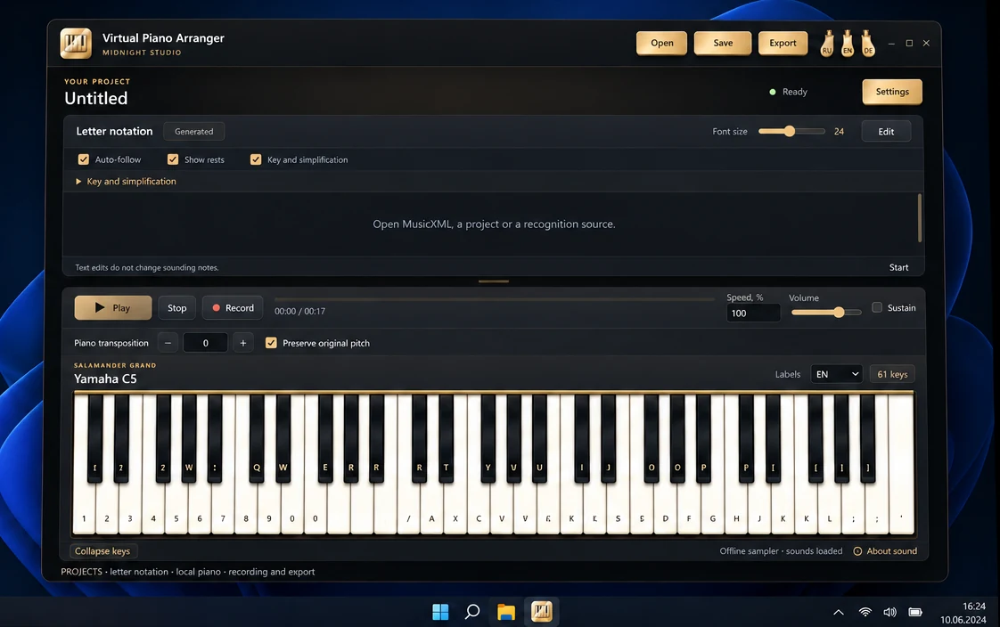

Virtual Piano Arranger — User guide
Turn notes into letters. Play on a local piano.
Get startedPlay in the browser
Open a file
Open MIDI, audition individual or selected parts, and choose the parts to import. You can also open MusicXML, VPA projects and untimed letter TXT.
Adapt the notation
Open Key and simplification. Preview the shift and fullness, then Apply; Cancel keeps the document. At 100%, accompaniment modes keep the preset, not all source notes. At 0%, they keep one highest original note per attack. No simplification restores the source selection. The original-pitch link compensates letter transposition.
Rests and playing
Show rests has synchronized controls above the notation and in the key dialog. Rest signs represent actual silence of selected parts. Held notes are not silence. During playback the current rest is highlighted; manual following does not require pressing a rest key. Continue with later notes to skip an attack.
Save and record
Save a VPA project to preserve the imported score and settings. Export TXT saves the visible letters, not exact rhythm. Record captures this application's piano sound, not a microphone. Export WAV directly; other audio formats need separately available FFmpeg.
Limits
This is a preview. MIDI uses piano sound, not original GM instruments. Verify recognition against the source. Untimed TXT has no automatic playback or guessed pauses. Audio/video recognition and YouTube import are unavailable. Do not share private projects or logs in bug reports.